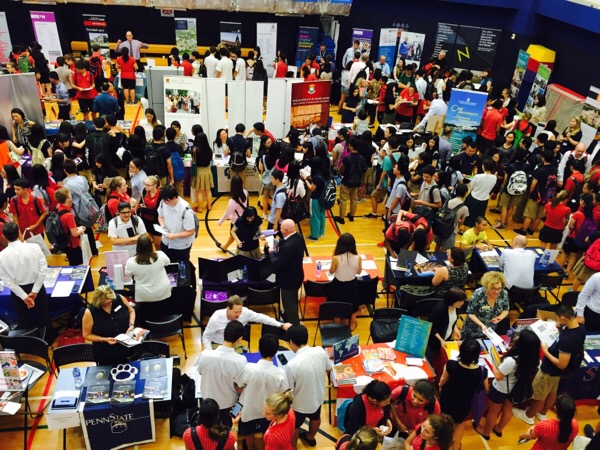

Fall means one thing on every high school student's calendar: college fair season. From now through November, college fairs are popping up in gyms, convention centers, and auditoriums across the country, giving students and parents the chance to meet with admissions representatives from dozens (sometimes hundreds) of colleges and universities in a single afternoon.
If you're a student or parent trying to figure out how to navigate a college fair, here's what you need to know before you go, plus three tips to help you actually get something out of it.
Where to Find a College Fair Near You
College fairs are organized by a number of different groups, and knowing where to look can save you a lot of time.
In Texas, many of the state's largest college fairs are organized by TACRAO (the Texas Association of Collegiate Registrars and Admissions Officers), which coordinates college and transfer fairs at high schools and community colleges throughout the state each fall and spring.
Nationally, NACAC (the National Association for College Admission Counseling) hosts National College Fairs in cities across the country. These fairs are free and open to the public, and they draw representatives from hundreds of colleges and universities, from large public flagships to small private liberal arts schools.
Not sure where to start looking? My Admission Reps in Your Area page pulls together college fairs, admission events, and campus rep visits from around the country in one searchable list, updated daily, so you can filter by city or by college and see what's coming up near you.

Don't Forget to Preregister with StriveScan
Here's a detail that catches a lot of families off guard: most college fairs today (including many TACRAO and NACAC fairs) use a platform called StriveScan to manage check-in.
When you preregister for a college fair through StriveScan, you get a personal barcode sent to your phone by text and email. Instead of filling out a paper form or writing down your information at every single table, you simply let each college scan your barcode, and your name, email, high school, and other details go straight into their system.
It takes less than five minutes to preregister, and it saves an enormous amount of time once you're actually at the fair. If you know you're headed to a college fair this fall, look up whether it uses StriveScan and preregister a day or two ahead of time.
3 Tips for Getting the Most Out of a College Fair
Once you know where the fair is and you've preregistered, here's how to make your time there actually count.
1. Do Your Homework First
Before you walk in, look up which colleges will be attending and star the ones already on your list. Most college fairs post their exhibitor list online in advance. Walking in with a plan beats wandering the whole gym floor trying to figure out where to start, and it means you'll spend your limited time with the schools that matter most to you.
2. Preregister for the Fair
As mentioned above, preregister through StriveScan (or whatever platform the fair is using) whenever it's offered. You'll receive a barcode with your contact information that can be scanned at each college's table, which is faster and more accurate than filling out cards by hand.
If the fair doesn't offer preregistration, come prepared anyway: print a sheet of address labels with your name, email, high school, intended major, and graduation year. You can hand one to each rep instead of writing your information out over and over.
3. Ask Questions Google Can't Answer
Skip the questions you could answer with a quick search, like acceptance rate or tuition cost. Instead, ask about student life, a specific program you're interested in, or what surprised the rep about campus when they first got there. Specific, thoughtful questions signal real interest and help you actually learn something you couldn't have found online, which is the whole point of showing up in person.
Make This Fall's College Fairs Count
A little preparation turns a crowded gym into a genuinely useful afternoon. Look up the fair, preregister if it's offered, and walk in with a short list of questions that actually matter to you.
If you'd like help building a college fair game plan, narrowing down your college list, or preparing for the admissions process in general, I'd love to help. As a Dallas college admissions consultant and former SMU recruiter with 8+ years of experience on the college admissions side, I work with students and families across the country to make the college search less overwhelming.
Ready to build your college fair game plan, or talk through your college list?
Book a Free ConsultationOr reach out anytime at alex@amcollegeconsulting.com.